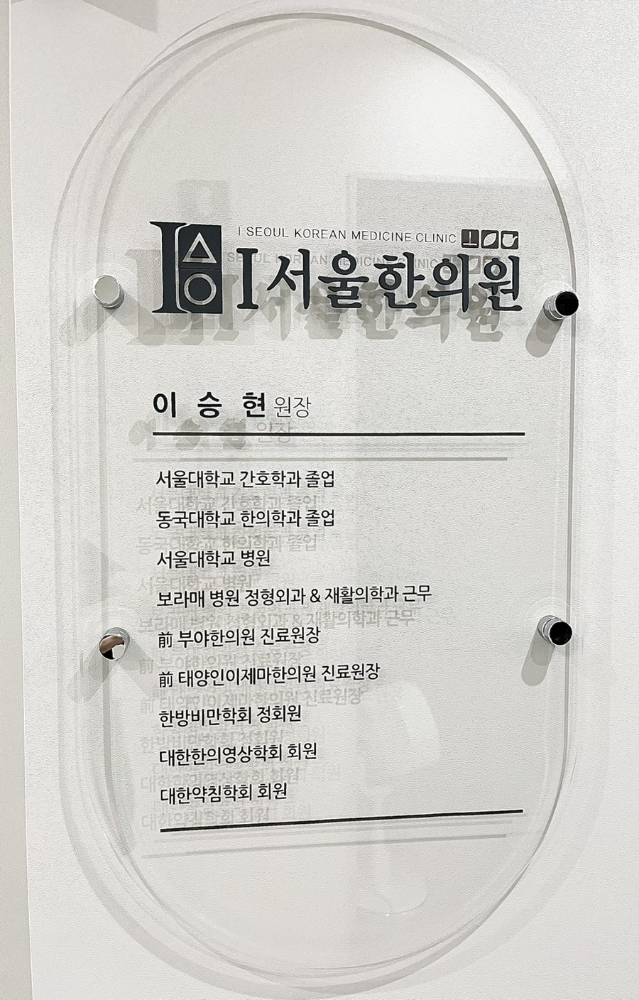

병원소개
체질을 살피고, 조제부터 탕전까지 정성을 더합니다.
진료 철학
아이(I)서울한의원은 아이의 성장에 밑거름이 되고 성장기 고민을 함께 나누며, 건강하고 씩씩하게 자라도록 돕는 진료를 지향합니다.
조제와 탕전
외부 탕전에만 맡기는 방식이 아니라 시간이 걸리더라도 조제부터 탕전까지 원장이 직접 관리하고 확인합니다.
이승현 원장

간호학과 한의학을 함께 공부한 경험을 바탕으로 환자의 현재 상태와 생활 패턴을 세심하게 살피는 진료를 지향합니다.
- 서울대학교 간호학과 졸업
- 동국대학교 한의학과 졸업
- 서울대학교 병원
- 보라매 병원 정형외과 & 재활의학과 근무
- 前 부야한의원 진료원장
- 前 태양인이제마한의원 진료원장
- 한방비만학회 정회원
- 대한한의영상학회 회원
- 대한약침학회 회원
대구광역시 수성구 교학로 13, 만촌3차 화성파크드림 상가동 201호
아이(I)서울한의원 · 대표원장 이승현 | TEL 053-425-1900
월·금 09:00 - 18:30
화·목 09:00 - 20:00 야간진료